import numpy as np
import matplotlib.pyplot as pltML Notes
Machine Learning (supervised learning) notes
Use of algorithms and statistical models to perform tasks without explicit instructions, instead using paterns and inference.
Examples:
- House price predictor
- Netflix recommendations
- Marketing
Matplotlib:
- xlabel
- ylabel
- title
- plot
- show
Practical Example - Plotting
# Effect of time spent walking (hours) on the distance travelled (miles)
time_spent_walking = [1, 2, 3, 4, 5] # (independent variable)
distance = [2, 4, 6, 8, 10] # (dependent variable)
plt.plot(time_spent_walking, distance)
plt.xlabel("Time Spent Walking (hours)")
plt.ylabel("Distance (miles)")
plt.title("Effect of time spent walking on distance travelled")
plt.show()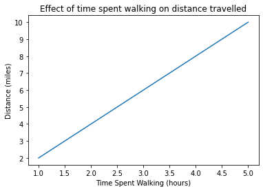
# Effect of car age (years) on price ($)
car_age = [1, 2, 5, 10, 30]
price = [30000, 25000, 18000, 10000, 4000]
plt.plot(car_age, price)
plt.xlabel("Car Age (years)")
plt.ylabel("Price ($)")
plt.title("Effect of car age on price")
plt.show()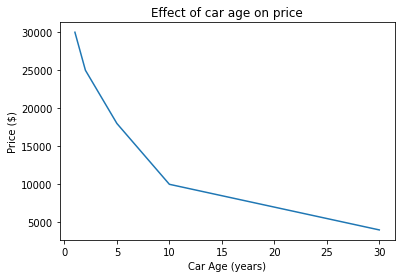
# Effect of amount of time spent studying (hours) on test score results (%)
study_time = [1, 5, 10, 20, 50, 100]
test_score_results = [40, 60, 70, 75, 88, 93]
plt.plot(study_time, test_score_results)
plt.xlabel("Study Time (hours)")
plt.ylabel("Test Score (%)")
plt.title("Effect of study time on test scores")
plt.show()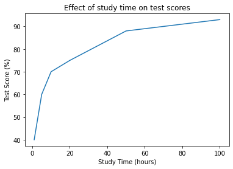
Linear Regression: y = mx + b
x: x axisy: y axism: gradient of lineb: value ofywhenx= 0
Example 1
x = [1, 2, 3, 4, 5]
y = [2, 4, 6, 8, 10]
plt.plot(x, y)
plt.show()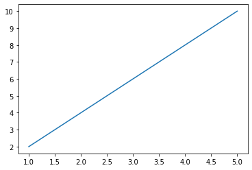
# y = 2x + 2
for i in x:
y = 2 * i
print(y)2
4
6
8
10Example 2
x = [1, 2, 3, 4, 5]
y = [6, 9, 12, 15, 18]
plt.plot(x, y)
plt.show()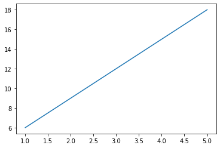
# y = mx + b
for i in x:
y = (3 * i) + 3
print(y)6
9
12
15
18Example 3
x = [0, 1, 2, 3, 4]
y = [6, 9, 12, 15, 18]
plt.plot(x, y)
plt.show()# y = mx + b
# y = 3x + 6
for i in x:
y = (3 * i) + 6
print(i, y)0 6
1 9
2 12
3 15
4 18Practical Examples - Linear Regression (y = mx + b)
Question 1
# Effect of amount of water provided (L) per day on size of trees (m)
water = [0, 1, 2, 3, 4, 5, 6, 7, 8]
tree_size = [4, 5, 6, 7, 8, 9, 10, 11, 12]
plt.plot(water, tree_size)
plt.show()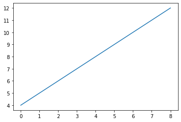
Solution
# y = mx + b
for x in water:
y = (1 * x) + 4
print(x, y)
# y = x + 40 4
1 5
2 6
3 7
4 8
5 9
6 10
7 11
8 12Question 2
# Effect of wingspan (cm) on flying speed (km/h)
wingspan = [0, 10, 20, 30, 40, 50, 60, 70, 80, 90, 100]
flying_speed = [0, 5, 10, 15, 20, 25, 30, 35, 40, 45, 50]
plt.plot(wingspan, flying_speed)
plt.show()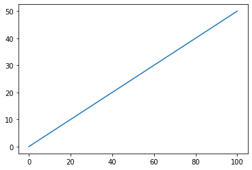
Solution
# y = mx + b
for x in wingspan:
y = 0.5 * x
print(x, y)
# y = 0.5x + 00 0.0
10 5.0
20 10.0
30 15.0
40 20.0
50 25.0
60 30.0
70 35.0
80 40.0
90 45.0
100 50.0Question 3
# Effect of number of gifts given to employees each year, on staff statisfaction levels (100%)
num_of_gifts = [0, 1, 2, 3, 4, 5]
satisfaction = [50, 55, 60, 65, 70, 75]
plt.plot(num_of_gifts, satisfaction)
plt.show()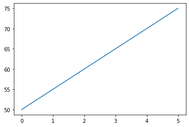
Solution
# y = mx + b
for x in num_of_gifts:
y = (5 * x) + 50
print(x, y)
# y = 5x + 500 50
1 55
2 60
3 65
4 70
5 75Line of Best Fit
Cost: distance of each point from best fit line
Loss: Sum of all distances between best fit line and data points (sum of costs)
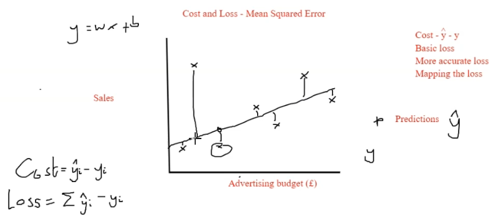
Mean Squared Error (MSE)
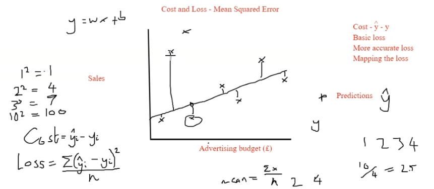
Mean Squared Error = sum (Y @ prediction - y at datapoint)^2 / number of datapoints
Example
# Data
x_data = [1, 5, 8, 10]
y_data = [4, 8, 9, 7]
# Data plot
plt.plot(x_data, y_data)
plt.show()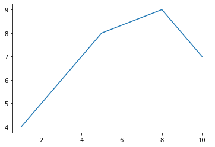
Best fit line (y = mx + b)
# Calculate m, b
m, b = np.polyfit(x_data, y_data, 1)
# Best fit line equation:
for x in x_data:
y = (m * x) + b
print(x, y)1 5.04347826086957
5 6.608695652173917
8 7.7826086956521765
10 8.56521739130435Cost & Loss - Mean Squared Error
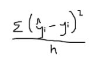
| variable | ||||
|---|---|---|---|---|
| x | 1 | 5 | 8 | 10 |
| y | 4 | 8 | 9 | 7 |
| y[hat] | 5 | 6 | 7 | 8 |
| cost | 1 | 4 | 4 | 1 |
# cost = (y[hat] - y) ^ 2 / 4
mse = 10 / 4
mse2.5Logistic Regression
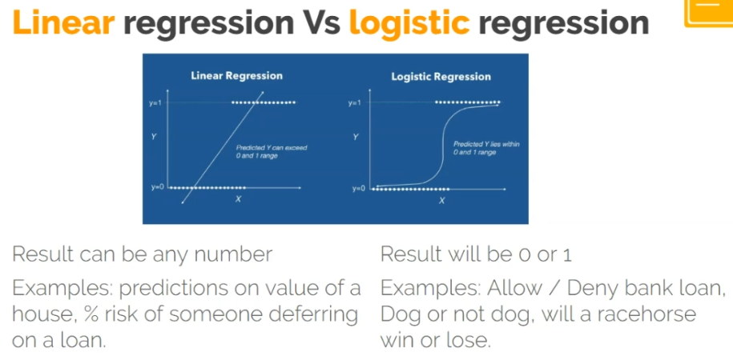
Overfitting
Best fit too accuratly defines traning data and minimizes the loss… but thats only training data and new data will keep the model humble.
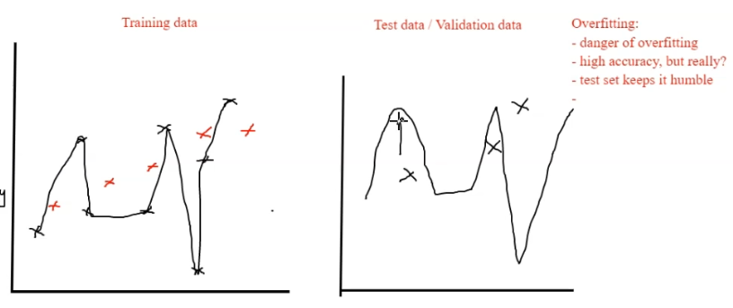
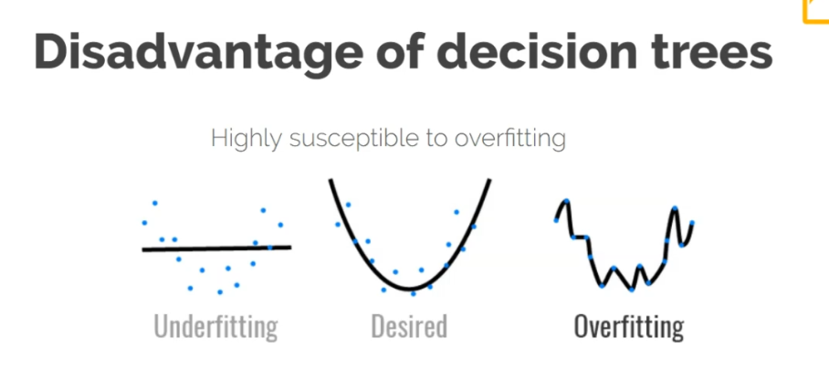
Random Forests
Random forests takes an average or majority decision from numerous decision trees and creates an output from this